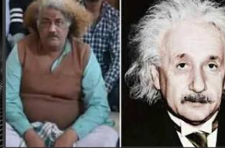

It became widely discussed because of a confrontation between protesting farmers and local authorities.
1. What actually happened?
The confrontation reportedly began as an argument between two groups of chaat vendors over customers and competition for business.What followed was anything but an ordinary disagreement. The argument escalated into a physical altercation, with people from both sides attacking one another using whatever objects were available.
The incident was filmed by bystanders. The footage subsequently spread across social media, turning a local dispute into a national internet sensation.
2. The two rival establishments
The two establishments were:- Shiv Chaat Bhandar
- Nav Durga Chaat Bhandar
The competition was intense because both establishments depended on attracting customers from the same busy marketplace.
Witnesses reportedly described workers from the two shops trying to pull prospective customers towards their respective establishments.
3. The man who became the face of the battle: Einstein Chacha

Perhaps the most memorable character in the entire incident was Harendra, popularly known as Chacha.
His distinctive, long, henna-dyed hair earned him the internet nickname Einstein Chacha, because people thought his appearance resembled Albert Einstein.
In an interview before his arrest, Harendra claimed that his establishment had been operating for around 40–50 years. He alleged that the rival establishment had repeatedly tried to steal his customers and had even spread rumours that his food was stale.